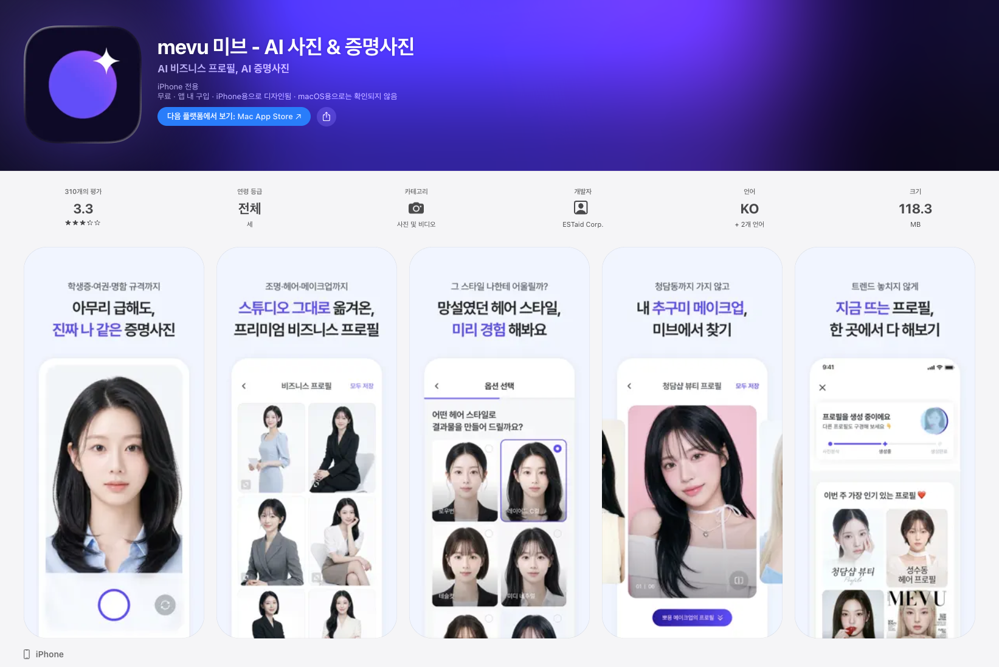
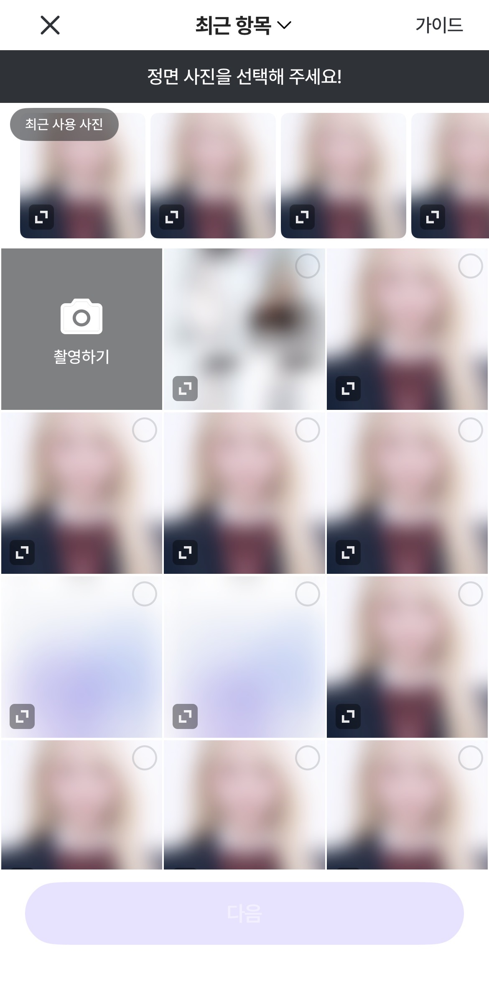
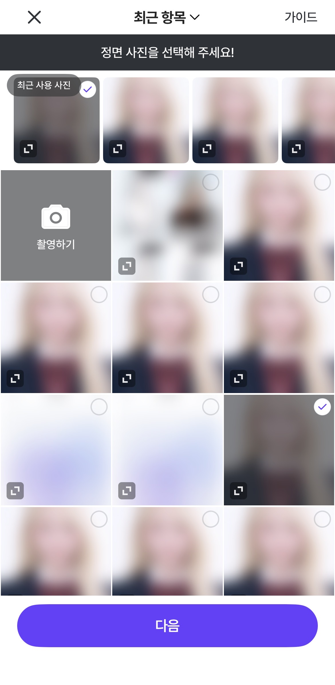
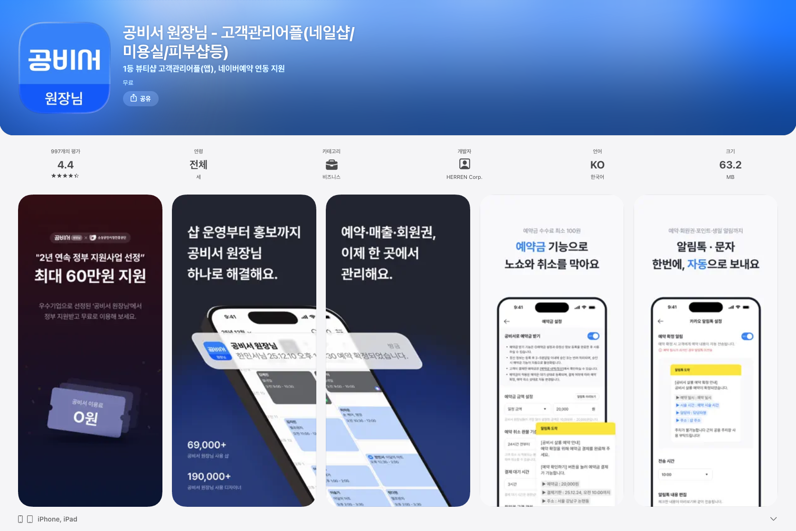
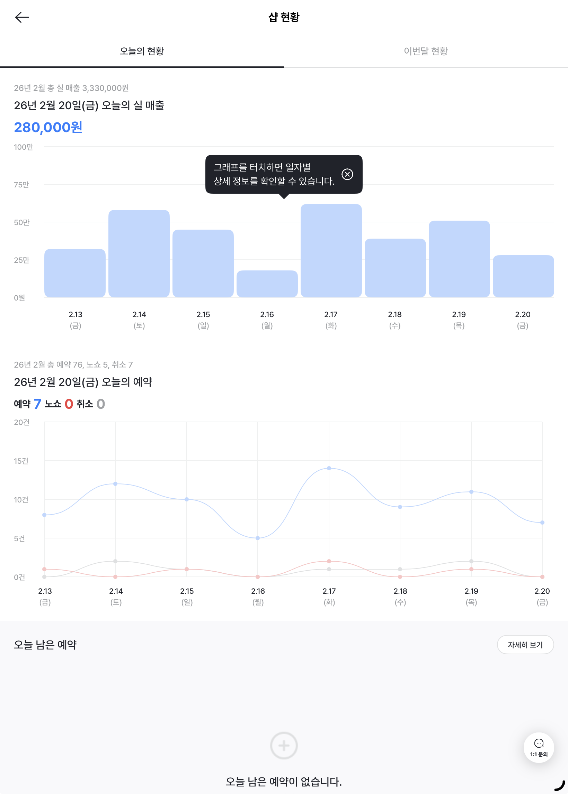
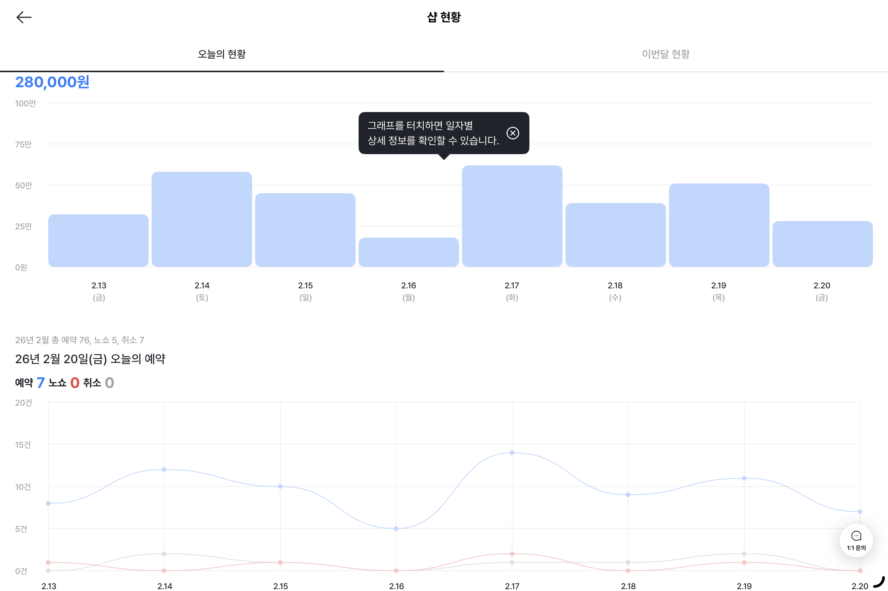

아키텍처 표준을 세우고 AI로 개발 프로세스를 자동화하는 iOS 개발자입니다.
AI로 프로필 사진을 생성하는 iOS 앱입니다. 미브 iOS 개발을 1인 담당하며, 자사 앱 '줌(ZUM)'과의 공통 iOS 아키텍처 표준 수립도 병행하고 있습니다.

생성/검증 역할 분리와 실측 근거 기반 최적화로 AI 자동 생성 도구의 신뢰도와 효율을 함께 확보했습니다
문제: figma-analyze의 lens 서브에이전트 4종이 각자 Figma MCP API 3개를 호출하면서 노드당 12회 호출이 발생. 시범 실행에서 rate-limit 도달로 매트릭스 spawn 후 결과 종합 실패.
대안 검토: lens 호출 시점 지연·순차 실행 등도 검토했으나, 근본적으로 API 호출 횟수 자체를 줄이는 방향을 선택.
선택: 노드당 fetcher가 Figma MCP 3개 API(get_design_context · get_metadata · get_screenshot)를 1회씩만 호출해 raw 데이터를 lens 서브에이전트에 전달하는 패턴 신설. 배치 단위 순차 실행으로 순간 부하까지 분산.
결과: 노드당 호출 12회 → 3회, 서브에이전트 토큰 1.6M → 570K (약 65% 절감), rate-limit 회피.
TCA + Clean Architecture로 iOS 표준을 세우고, Data 레이어를 V2 네트워킹으로 신규 구현했습니다
@Dependency 기반 DI)@State·부분 TCA가 혼재하던 화면 상태를 표준 체인으로 정리. 레거시와 병존시키며 전환해 일괄 재작성 회피@Dependency 기반 Router·Client·DTO 3계층, 도메인별 분할 + 공통 인프라(NetworkClient·AuthInterceptor·TokenStore 등). Swagger tag 단일 기준으로 도메인 매핑/v2-api 스킬로 Swagger tag 입력 → Router·Client·DTO·README 자동 생성, 코드↔문서 동기화 유지간헐적으로만 발생하던 결제 실패를 지연 환경 재현으로 추적해, 결제 완료와 페이월 dismiss가 경쟁하던 문제를 상태 설계로 해결했습니다
.processing 중간 상태를 추가 — onPurchaseCompleted에서 Task 밖 동기 코드로 전이시켜 SDK 자동 dismiss(→onDisappear)보다 먼저 실행되도록 보장하고, onDisappear는 .presenting일 때만 취소 처리.processing을 종료 상태에서 제외 — 서버 검증 완료까지 결제 결과가 확정되지 않도록 대기 계약을 함께 정리기능의 동작 정책과 UI/UX 스펙을 직접 정의하고, 고정된 실험 일정에 맞춰 개발 범위를 조정했습니다


문제: 실험 일정이 마케팅과 묶여 고정돼 배포를 미룰 수 없는 상황에서, 초기 스펙 범위 그대로는 일정 안에 검증을 마치기 어렵다고 착수 초기에 판단.
대안 검토: 배포를 다음 사이클로 미루는 안은 고정된 일정상 불가능 → 스펙 범위를 줄이는 방향으로 전환.
선택: 초기 스펙은 백엔드가 미리보기 관련 사용자 데이터를 저장·관리하고 Hackle 이벤트까지 조회해 API 응답으로 내려주는 구조. 이를 클라이언트가 Hackle 유저 속성·이벤트 조회를 직접 사용하는 형태로 바꿔, 백엔드 작업을 미리보기 생성 기능으로 좁힘.
결과: 리드타임 산정 7일 → 4일, 고정된 실험 일정 안에 배포.
뷰티/헬스케어 매장을 위한 CRM SaaS 서비스로, 예약 관리·고객 관리·매출 관리·알림톡 발송 등 매장 운영에 필요한 기능을 제공하는 iOS/iPadOS 앱입니다.

웹 프론트 개발자와 협업하여 브릿지 통신 프로토콜을 설계하고, 서비스 핵심 기능을 구현
배경: 예약 캘린더를 웹뷰로 전환하면서 웹 프론트, Android 개발자와 함께 브릿지 통신 프로토콜을 처음부터 설계했습니다. 추후 알림톡, 이용권 등 다른 화면에서도 재사용할 수 있도록 확장성과 일관성을 우선으로 고려했습니다.
설계 포인트:
· 브릿지 커맨드를 Enum으로 정의하여 문자열 오타 방지 + 컴파일 타임 안전성 확보. CaseIterable로 등록을 자동화하여 누락 방지
· 메시지 바디를 Codable 구조체로 획일화하여, 어떤 화면에서든 동일한 패턴으로 데이터를 처리
· 화면별로 필요한 커맨드만 등록할 수 있도록 커맨드 리스트를 분리
· 새 브릿지 추가 시 enum case 1줄 + switch case 1줄 + 핸들러 메서드 1개만 추가하면 되는 구조
결과: 이 설계 패턴을 기반으로 알림톡, 매장소식 등 신규 웹뷰 기능 추가 시에도 동일한 구조로 빠르게 구현할 수 있는 기반을 마련
문제: WKWebView의 dataStorage를 사용하여 Cookie를 저장하는 경우, dataStorage의 수명이 웹뷰 세션을 따라가 세션 종료 후 웹뷰 자체 갱신 시 Cookie가 사라져 500 에러가 발생. 재현이 어려워 원인 파악이 쉽지 않았습니다.
해결 방법: dataStorage 대신 JavaScript 메서드를 사용하여 유효기간 30일인 Cookie를 세팅하고, 웹뷰 로드 및 자체 새로고침 시 Cookie 존재 여부를 확인하여 없는 경우 재세팅하는 방어 로직을 구현했습니다.
임팩트:
· 백엔드 개발자와 원인을 함께 확인하고, CS팀 및 사내 테스터와 검증 후 배포
· 배포 후 서버에서 감지된 500에러 감소 비율(약 84%)과 앱 업데이트 사용자 비율이 일치하여 이슈 해결을 검증. 이후 현재까지 재발 없음
· 원인과 해결 과정을 전사 문서로 공유하여 팀 지식 자산으로 구축
MVC → MVVM + Clean Architecture 전환과 테스트 환경 구축
MVC의 문제점: ViewController가 비대한 것도 있었지만, 근본적으로 역할이 명확하게 분리되어 있지 않아 버그 수정이나 기능 추가·수정 시 유지보수가 어려웠습니다. Storyboard 기반 UI로 인해 협업 시 충돌이 잦고 코드 리뷰도 어려웠습니다.
왜 MVVM + Clean Architecture를 선택했나: 입사 당시 최소 지원 버전이 iOS14로 SwiftUI의 안정성이 부족했고, MVVM + Clean Architecture는 실제 적용 사례와 학습 자료가 충분하여 팀에 안정적으로 도입할 수 있다고 판단했습니다.
전환 방식: 한번에 전환하지 않고, 먼저 Network 레이어를 새로 구현한 뒤 신규 화면부터 코드 베이스 UI + MVVM 구조로 적용하는 점진적 전환 방식을 택했습니다. 기존 MVC 코드와 공존하면서 리스크를 최소화했습니다.
Storyboard → 코드 베이스 UIKit → SwiftUI + TCA 점진적 전환
SwiftUI 전환 배경: iOS 최소 지원 버전을 15로 상향하면서 SwiftUI의 안정성이 다소 확보되었고, WWDC에서도 SwiftUI 중심으로 자료가 제공되는 만큼 UIKit이 레거시가 될 것이라 판단했습니다. 사내 B2C 앱이 처음부터 SwiftUI + TCA로 구축되어 서비스 환경에서의 안정성도 확인한 상태였습니다.
브릿지 아키텍처 선택 이유: UIKit과 SwiftUI의 화면 전환 방식이 달라 기존 UIKit 화면과 호환되는 방법이 필요했습니다. 기존의 push/pop, present/dismiss 방식이 직관적이고 관리 측면에서 유리하다고 판단하여, UIKit 네비게이션 체계를 유지하면서 SwiftUI 화면을 통합하는 브릿지 구조를 설계했습니다.
RxSwift/Combine 듀얼 지원: SwiftUI + TCA 도입으로 Combine이 필요해지면서, 기존 RxSwift 기반 48개 Repository를 수정하지 않고 신규 화면에만 Combine을 적용할 수 있는 구조를 설계했습니다. Serviceable 프로토콜에 Combine 메서드를 병렬로 추가하고, 메서드 오버로딩으로 기존 코드와의 호환성을 100% 유지했습니다.
직접 설계하고 구현한 기능들


스크럼 마스터로서 다양한 직군과 협업하며 프로젝트 운영
iOS/Android 간 UX 개선: 매출 리뉴얼 프로젝트에서 푸시 알림을 통한 진입 페이지가 iOS와 Android에서 다르다는 것을 발견하고, 장단점을 비교하여 통일 방안을 이끌어냈습니다.
데이터 기반 의사결정: iOS14→iOS15 최소 지원 버전 상향을 위해 3개월치 사용자 데이터를 직접 추출·분석하여 iOS14 사용자가 0.1%대임을 근거로 CTO, PO 승인을 도출했습니다.
화면 전환 설계 제안: 예약 캘린더와 매출 화면 간 이동 시 무한 루프가 발생할 수 있는 설계를 발견하고, "프로세스가 끝나면 진입점으로 돌아가는 구조"를 기획단에 제안하여 반영. 같은 화면이라도 진입점에 따라 나가는 방법이 다르도록 구현했습니다.
서비스 운영 대응: 매출 리뉴얼 시 기획단에서 의도적으로 제거한 기능이 출시 후 CS로 인입되었고, 도메인 지식을 활용해 다른 비즈니스 로직에 영향을 미치지 않는 방법을 찾아 빠르게 복구·배포했습니다. 이후 기능 제거 시 데이터를 근거로 제시하는 습관을 갖게 되었습니다.
개발 전 과정을 커버하는 AI 스킬과 가이드 문서 체계